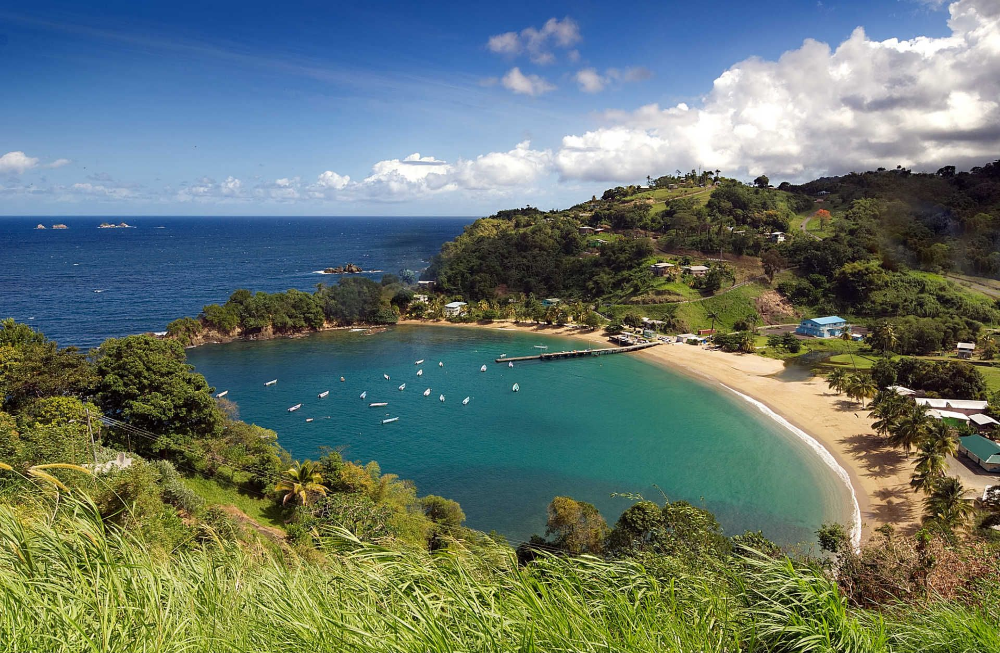
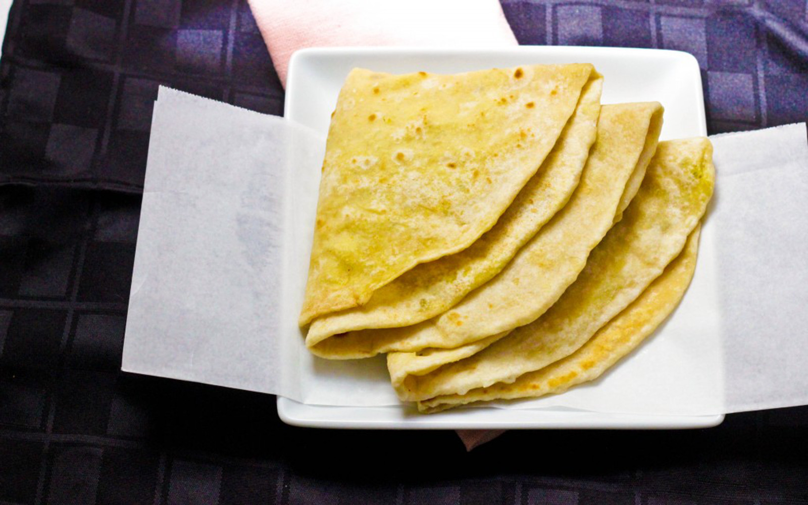
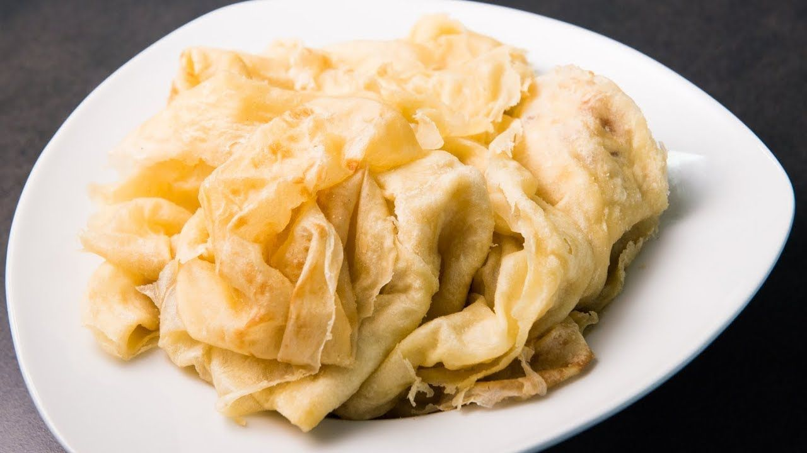
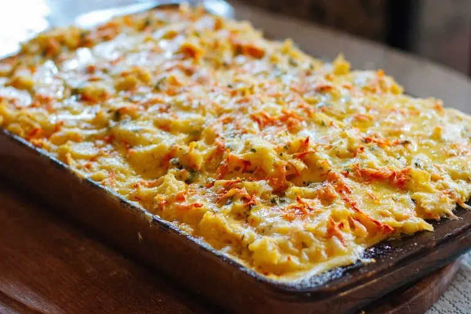
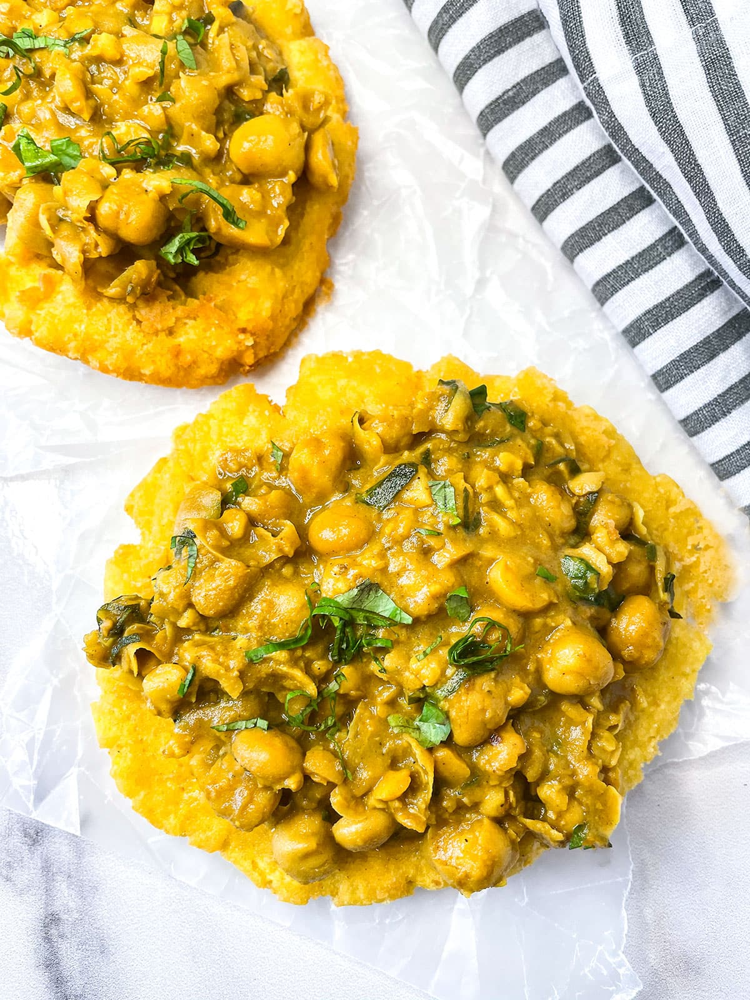
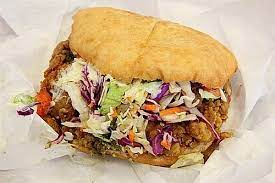

The Best Food in Trinidad




Roti is a classic flatbread that my mom would usually make for breakfast, its usually eaten with other things such as chicken, sausage, mango, sardines, and eggplant. Roti is one of my favorite meals and there are many different versions you can try out such as Buss-up shot a paperthin roti that usually looks beaten and torn, Dhalpurie a thicker double layered roti filled with lentil flour, and Sada a white pita-like roti usually served for breakfast instead of bread.

Macaroni Pie is a classic Trinidadian food that I usually have for lunch, its an egg, milk, and macoroni casserole that became popular at the end of WWII. In addition to the cheese with evaporated milk, sauteed onions, and eggs, the recipe also includes cayenne, cumin, and even a dash of tumeric to the milk and egg mixture.

Doubles is another one of my favorites, its a curried chickpea dough sandwhich and is a classic amongst my family as one of our favorite meals. It dates back only to the mid-20th-century where Eamduel Deen began serving his signature chana using round discs of bara as a plate. Word spread and soon customers started asking him to "double-up" on the bara. Nowadays you can find doubles stands on many of the street corners in Trinidad. If you want to try some yourself you can go to Anil's Roti Shop which is where my family commonly buys doubles.

Bake and Shark holds some fond memories for me. Its a battered shark placed inside a bake, a type of flat coconut bread made in an oven. It is then seasoned with green seasoning which includes a blended mixture of garlic, onion, peppers, and shadon beni. It is usually served with pineapples and coleslaw, and is really delicious. I remember times when I would be visiting some family friends in Trinidad and then we would go to the beach and order bake and shark afterwards. Its one of the meals I would like to try again but at the current moment I don't know any place that sells bake and shark in New York.